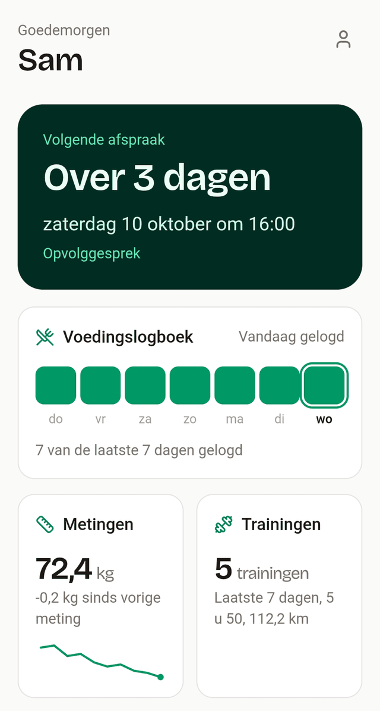

Persoonlijke voedingsbegeleiding via videogesprek en je eigen app. Dezelfde aanpak en dezelfde trajecten als in de praktijk, zonder verplaatsing.
Je woont niet in de buurt van Waregem of Kruisem. Online maakt dat geen verschil: je zit gewoon thuis.
Geen reistijd en geen wachtkamer. Een sessie past makkelijker in een drukke week.
Je hoeft niet de deur uit en geen oppas te regelen. Je volgt je sessie vanuit je eigen huis.
Een kort gesprek, online of telefonisch. We bekijken wat je zoekt en of mijn aanpak bij je past. Geen verplichting.
Een uitgebreid gesprek van 60 minuten over jouw situatie. Ik luister vooral, en je krijgt een eerste opdracht mee naar huis. De intake is de start van je traject.
Je krijgt toegang tot mijn klantenapp en noteert er wat je eet en hoe je beweegt. Zo werken we met wat er echt gebeurt, niet met wat je je nog herinnert.
Telkens één focuspunt, via videogesprek. Ik bekijk je logboek vooraf, zodat we de sessie gebruiken om te verbeteren en niet om op te sommen.
Je logt rechtstreeks in mijn eigen app, vanaf je smartphone of computer. Ik zie je logboek vóór elke sessie, jij ziet je eigen verloop.

Het standaardtraject waarmee elke klant start.
Voor wie meteen kiest voor langdurige ondersteuning.
Online of op locatie: dezelfde sessies, dezelfde prijs, in één keer betaald bij de intake. Alle details vind je op Tarieven.
Geen verplichting. We bekijken samen of mijn aanpak bij je past.
Online of telefonisch. Dit is een kennismaking, geen consult. De intake blijft de betaalde start van je traject.
Voor voedingscoaching wel. Het werk gebeurt vooral in je dagelijkse leven: wat je eet, wanneer en waarom. Dat kan ik via een videogesprek en je logboek in de app net zo goed bespreken als in de praktijk. Wat je op de praktijk zou meten of wegen, doe je thuis zelf, en we spreken af hoe.
Een toestel met camera en geluid (laptop, tablet of smartphone) en een stabiele internetverbinding. Voor de app volstaat je smartphone. Een weegschaal en een meetlint zijn handig om je metingen in te geven.
Op dezelfde manier als bij de trajecten op locatie: je betaalt het volledige traject in één keer bij de intake, via overschrijving. De factuur krijg je per mail. De kennismaking vooraf is gratis.